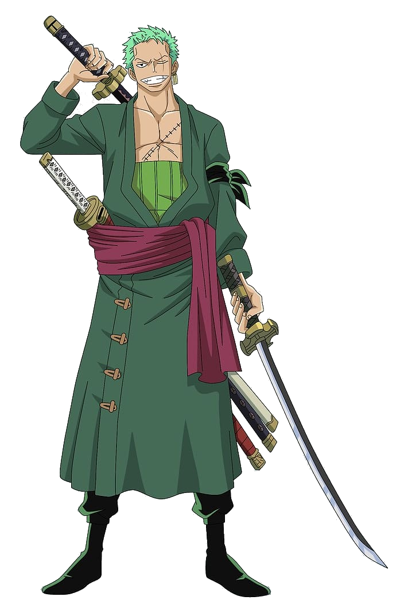

Roronoa Zoro
Características Principais:
Nome original: ロロノア・ゾロ
Nome traduzido: Roronoa Zoro
Nacionalidade: Japonês
Terra-natal: Vila Shimotsuki - East Blue
Idade: 21
Altura: 1,81
Peso: Desconhecido
Habilidade: Espadachim
Armas usadas: Três espadas
Tripulação: Piratas do chapéu de palha
Biografia
Zoro, que também é conhecido como "Caçador de Piratas" por conta de seu passado como caçador de recompensas, treina com armas brancas desde criança, se destacando por utilizar três espadas ao mesmo tempo, também foi o primeiro que se juntou á tripulação de Luffy. No decorrer da história, com seu sonho de ser o melhor mestre espadachim do mundo, Zoro acaba encontrando Dracule Mihawk que possui atualmente o título de "Melhor Espadachim do Mundo" onde se enfrentam e consequentemente Mihawk se torna seu professor de esgrima durante dois anos. Por conta de todas suas conquistas e passado de caçador, Roronoa Zoro possui uma recompensa de ฿ 1.111.000.000.